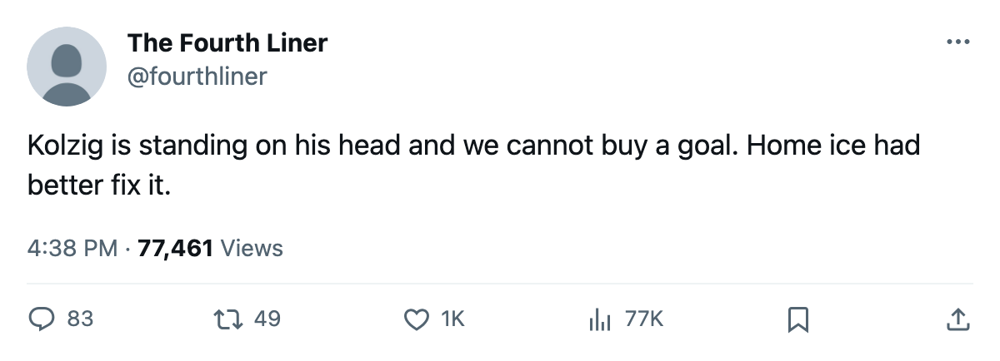

SERIES REPORT: Washington 2, Carolina 0 -- Kolzig holds the Hurricanes to a goal a night
The Capitals take a 2-0 lead to Carolina, where Game 3 is set for April 13.
 Ray CallumSenior correspondent · Home Ice Network
Ray CallumSenior correspondent · Home Ice Network
 Carolina Hurricanes has scored twice in two games and lost both.
Carolina Hurricanes has scored twice in two games and lost both.  Washington Capitals won the opener 2-1 on April 9 and the second 4-1 on April 11, and the series moves to Carolina for Game 3 on April 13.
Washington Capitals won the opener 2-1 on April 9 and the second 4-1 on April 11, and the series moves to Carolina for Game 3 on April 13.
 Olaf Kolzig89 has a 1.00 goals-against and a .952 save percentage in the two wins. Washington finished the regular season 39-26-8 with 104 points, fourth in the East. Carolina finished 30-25-14 with 100 points and fifth, and the two clubs met seven times, Washington winning five. Five of those seven were one-goal games.
Olaf Kolzig89 has a 1.00 goals-against and a .952 save percentage in the two wins. Washington finished the regular season 39-26-8 with 104 points, fourth in the East. Carolina finished 30-25-14 with 100 points and fifth, and the two clubs met seven times, Washington winning five. Five of those seven were one-goal games.
Washington has not needed much at the other end.  Jaromir Jagr89 has 3 assists, Robert Lang 2 goals,
Jaromir Jagr89 has 3 assists, Robert Lang 2 goals,  Mike Grier80 a goal and an assist,
Mike Grier80 a goal and an assist,  Sergei Gonchar84 2 assists.
Sergei Gonchar84 2 assists.
For Carolina,  Radim Vrbata74 has a goal and an assist,
Radim Vrbata74 has a goal and an assist,  Mathieu Dandenault75 2 assists, Tomas Kurka76 a goal and
Mathieu Dandenault75 2 assists, Tomas Kurka76 a goal and  Rod Brind'Amour80 an assist.
Rod Brind'Amour80 an assist.
 Kevin Weekes84 has a 3.00 goals-against and a .880 save percentage in the Carolina net. The Hurricanes scored 278 goals in the regular season; Washington allowed 250.
Kevin Weekes84 has a 3.00 goals-against and a .880 save percentage in the Carolina net. The Hurricanes scored 278 goals in the regular season; Washington allowed 250.
Carolina returns home for Game 3 on April 13 and Game 4 on April 15. Washington won its last six regular-season games and has carried that into April.
